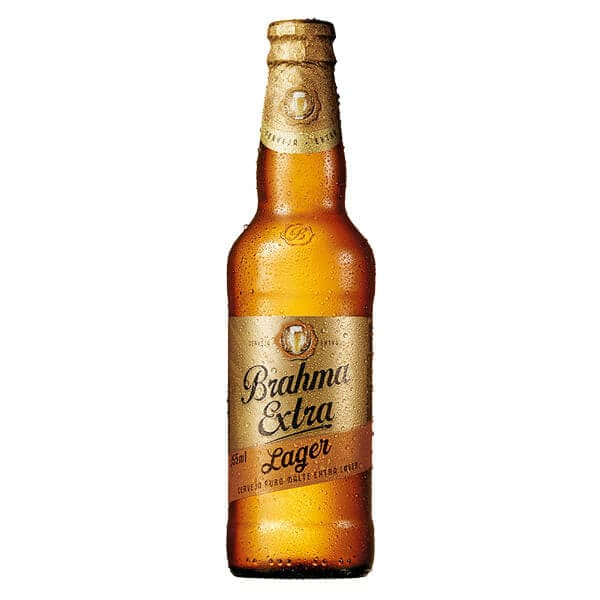
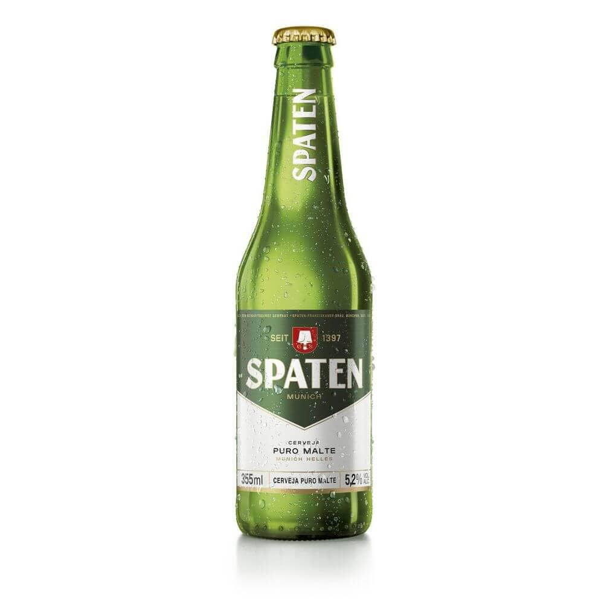

Stella Artois

R$ XX,XX
Sua cor cristalina e aroma com notas maltadas são resultados do lúpulo tcheco Saazner.
Stella glútem

R$ XX,XX
Sua cor cristalina e aroma com notas maltadas são resultados do lúpulo tcheco Saazners.
Brahma Lager
R$ XX,XX
Aparência clara, seu aroma é maltado e possui um suave herbal além de notas levemente banana.
Brahma Lager

R$ XX,XX
Sua cor âmbar e tonalidade avermelhada, com aroma de caramelo, malte torrado e leves notas frutais.
Brahma Weiss

R$ XX,XX
Cor clara e opaca, sabor frutado . Possui leve acidez e espuma cremosa.
Brahma zero

R$ XX,XX
É a escolha ideal para quem não pode consumir álcool.
Brahma Malzbier

R$ XX,XX
Com sabor ligeiramente adocicado e cor escura devido à adição de caramelo.
Corona

R$ XX,XX
Tem um leve amargor e vai muito bem com um limão. É uma Standard American Lager, possui cor clara.
Bohemia

R$ XX,XX
É produzida com malte 100% importado e lúpulo Saaz da República Tcheca.
Budweiser

R$ XX,XX
Usa Beechwood, que mantém o fermento em suspensão por mais tempo durante a maturação.
Bohemian Pil.

R$ XX,XX
Produzida com o lúpulo tcheco Saaz, proporciona um aroma fresco e frutado.
Patagonia Wei.
R$ XX,XX
Notas de laranja, limão e abacaxi equilibram perfeitamente esse aroma.
Patagonia Lager
R$ XX,XX
A cor marrom acobreada e o sabor equilibrado de malte e lúpulo.
Spaten
R$ XX,XX
Feita com um rigoroso processo, seguindo a receita de Munique.
Cervejas

Caverna.
Pub